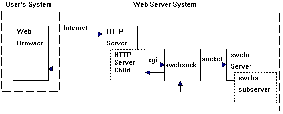
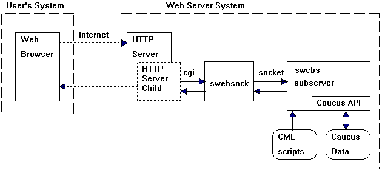

| Caucus Architecture |
1. IntroductionThis document describes the overall architecture of Caucus. This includes the mechanics of how the web interface actually works, and the location, names, and formats of the most important files.
While it is not necessary to read or understand this document in order to use or even to install Caucus, it is very helpful if you intend to modify the web interface, or to connect other applications or programs to Caucus.
This document assumes a general familiarity with HTML, Web server management, Unix commands and processes, and the use of Caucus.
2. Caucus Design Goals
There were seven main design goals that shaped the architecture of Caucus:
- Allow the use of any Web browser to provide a graphical user interface to Caucus conferences. (In practice, this has come to mean Netscape 2 or Internet Explorer 3.02 or higher.)
- Provide the tools for Webmasters to build a completely customizable Caucus interface. Caucus uses "CML" (Caucus Mark-up Language) scripts, which are analogous to individual HTML pages.
Caucus includes a default set of such scripts (pages), but they may be completely customized by the local site. This is in keeping with the long-standing Caucus tradition of complete customizability.
- The Caucus server was built on top of the existing Caucus API (applications programmer interface) function library, minimizing development time and guaranteeing data compatibility.
- Caucus works side by side with existing Caucus ("text interface") software. A Caucus user may access conferences through the Web or the text interface, without conflict.
- Caucus works with existing Unix HTTP servers, through the CGI interface. The Caucus server could also be adapted to work with a custom HTTP server to provide for higher efficiency.
- The Web "access authorization" userid and password scheme is used to provide secure access to Caucus. When a userid has been verified by the Web server, that same userid is used to identify the particular Caucus user. All normal Caucus security (access to specific conferences, etc.) applies.
An interface to other authorization schemes is also available as part of the Caucus server.
- Transactions between the browser and the Caucus server must be as efficient as possible. The main effect of this on the design is the creation of a dedicated "sub-server" process for each user's Caucus session.
3. Caucus Web Interface: Transactions
This section describes what actually happens when a person uses a Web browser to access Caucus. In the steps listed below, "swebd" refers to the master Caucus server process. "Swebs" is the dedicated user "subserver" process. "Swebsock" is a light-weight program that passes data to and from swebd. "Httpd" is the standard name for the HTTP server process.
3.1 Initial connection to Caucus
- The user's browser sends a connection request (over the Internet, or a local intranet) to the host's HTTP server.
- The HTTP server immediately spawns (or connects to a pre-existing) child httpd process to handle the request.
- The initial "connection to the Caucus server" is actually an access-authorization (i.e., userid and password) protected URL that runs a CGI program called swebsock. Swebsock opens a socket to Swebd (the master Caucus server).
- Swebd spawns a child, called the swebs subserver, which gets the userid from the browser. The subserver is now "dedicated" to this userid, and continues running on its own. The subserver constructs the initial HTML page, and passes it (along with its process id and a unique security code) back to swebsock. Swebsock passes everything back through the HTTP server child to the browser.
This process is illustrated in the following diagram:

3.2 Subsequent requests
Once the initial connection is made, all subsequent Caucus requests by the browser are passed through to the dedicated swebs subserver. Each such request uses a particular CML script as part of the URL. Such a request will produce the following sequence of events:
- The browser sends the new request to the HTTP server.
- The HTTP server immediately spawns (or reuses) a child httpd to handle the request.
- The httpd child starts a new instance of swebsock, which passes the request on to the dedicated subserver. The subserver reads (or writes) the requested information to the Caucus database, through the Caucus API. The subserver then formats the information according to the codes in the requested CML page, and passes the resulting dynamically created HTML page back through the HTTP server child to the browser.
This process is illustrated in the following diagram:

3.3 Notes
- In the diagrams, the large dashed boxes are computer systems. The small boxes are processes, and the rounded boxes are disk files. Lines indicate communication paths, either HTTP, CGI (stdin/stdout), sockets, or file reading and writing.
- Note that each browser request involves one or two new processes: the HTTP child, and the CGI swebsock. These processes are kept as lightweight as possible.
- In contrast, since there is one swebs subserver per user, and each subserver persists across the entire user's browser session, the subservers cache all sorts of information. The subserver also has a timeout period -- i.e., after a certain period with no requests, it exits. Otherwise the system might fill up with inactive subservers.
4. CML: The Caucus Markup Language
4.1 CML Description
The entire Caucus user interface is built out of CML ("Caucus Markup Language") scripts or pages. CML can be thought of as a superset of HTML, with an embedded scripting programming language that is interpreted (by the "swebs" process) on the server. Thus, CML pages can not only generate dynamic HTML, but also access the Caucus database on the server, and other files or even programs on the server.
CML as a language contains most of the standard control directives that one would find in any programming language (if/else, loops, etc.), plus a rich set of functions for manipulating web data, Caucus database data, and connections to other programs or files. It is not strictly speaking a superset of HTML (in that it does not understand or parse HTML), but in practice most CML pages contain a large amount of embedded HTML, plus some CML control statements and functions.
CML pages contain 4 kinds of text:
- Comments. In the Unix tradition, all lines beginning with "#" are comments and are ignored. Entirely blank lines are also ignored.
- HTML code. All lines beginning with a single quote (") are parsed for CML functions, but are otherwise passed on (as HTML) to the browser. (The quote is removed.)
- CML functions. Strings of the form "$xyz()", "$xyz(value)", or "$(value)" are parsed and replaced by the appropriate Caucus values. The CML functions are described in the CML Reference Guide.
- CML directives. Directives are like C program code: they describe actions to be taken. Directives include conditional statements ("if" and "else") and loop controls ("for" and "count").
A single logical line may be broken across several physical lines; a "\" as the last character means "continued on next (physical) line". This is generally unneeded, except for HTML <PRE> text that is being built out of mixed text and CML functions.
4.2 CML directives
The CML directives provide some simple control structures recognizable from other programming languages, including:
for variable in list count variable first_val last_val if condition else set variable valueFor more information, see the CML Reference Guide.
4.3 CML functions
All CML functions evaluate to strings of characters. There is no other data type. The same holds true for CML variables. The CML functions provide access to Caucus data, browser and server control, string manipulation, and logic functions. Again, see the reference guide.
5. Layout of Caucus files
This section describes the layout of the Caucus files -- their location and purpose. All of the files live in or under the Caucus home directory, and (unless explicitly noted elsewhere) should always be owned by the Caucus userid.
Important: If you are editing these files for any purpose, you must do it while logged in as the Caucus userid. In particular, do not modify the Caucus files, or run the conference management programs, while logged in as "root" or "administrator".
5.1 CML pages
The CML pages control the precise look and feel of the Caucus web interface. They are all located under the CML directory. As a site may have multiple (distinct) interfaces, each interface gets its own sub-directory under CML. The default set of CML pages is contained in the directory CML/CC44.
The CML pages are ordinary ascii text files, usually called something.cml, or something.i (for "include" -- files included in other .cml files). Each CML interface (such as CML/CC44) also has a special subdirectory called "Local". This contains files that are intended to be changed for your local site, and that will not be touched or replaced the next time you install a Caucus upgrade.
Two particularly important files in the Local subdirectory:
- switch.i contains common "switches" that may be set for your site to change how Caucus behaves.
- l_confs.i is a list of conference names that will appear under "Popular Conferences" on the Caucus Welcome page.
See the header comments in these files for more information.
In addition to the conferencing interface in CML/CC44/main, there is also a separate (and small) interface in CML/CC44/reg. This set of CML pages is entirely dedicated to registering a userid and password for a new user. (It must be a separate interface, because it will be used by people who have not yet gotten or been assigned a userid and password!)
5.2 The SWEB CGI directory
The SWEB directory contains CGI programs and related files that are used to start up the regular Web interface to Caucus.
- swebd is the Caucus master server program
- swebs is the Caucus "subserver" program
- swebd.conf is the configuration file for swebd
- swebsock is the CGI program that communicates between httpd and swebd
- .htaccess is a file that makes SWEB an access-controlled directory (NCSA httpd)
- cpw1 is a program to modify the httpd password file
- start.cgi is a CGI script used to interpret "special" Caucus URLs, such as "http://hostname/caucus/conference_name/item_number.
5.3 The REG CGI directory
The REG directory contains CGI programs and related files that are used to start up the "register a userid" interface. This includes:
- swebsock is a copy of or link to the SWEB/swebsock program
5.4 The SOCKET directory
The various Caucus programs (swebd, swebs, swebsock) communicate with each other via a data path called "sockets". The sockets must have a name and a location; therefore they are placed in this directory.
- sweb is a socket to master swebd server
- swebnnnnnn is a socket for a particular swebs subserver, process number nnnnnn
- debug: if this file exists, debugging logs are created for swebd, swebs, and swebsock.
5.5 The public_html directory
A URL of the form "http://yourhost/~caucus/xyz.html" looks for the file xyz.html in the public_html directory. (Depending on your httpd server, you may have renamed public_html to something else.) Caucus keeps some specific files in this directory:
- caucus.html is a simple HTML page to link to Caucus interface (via SWEB/caucus.cgi) and to the "register a userid" interface (via REG/register.cgi).
- GIF41 is a directory containing gif and jpeg images used by Caucus interface.
5.8 The Cnnnn conference directories
The conference data for a particular conference is stored in a single directory. Each conference has a unique four digit number; thus, the data for conference number 1 is stored in the directory C0001.
Conference data is always stored in "flat" ascii text files. In theory this means that the Caucus manager may edit these files directory. In practice you should never do this without specific instructions from Screen Porch technical support staff. This information is provided purely for reference; Screen Porch is not responsible for the results of unauthorized tinkering with these files.
Important files:
- userlist contains the permissions list of who may or may not access this conference
- masteres is the master list of items and number of responses to each item
- 0010000000 is the text of item 1 (and some responses)
- 0050210000 is the text of item 5, response 21 (and some following responses)
- introduc is the conference "introduction"
- greet is the conference "greeting"
- membr001 is the list of conference members
- variable contains conference variables (from CML $set_conf_var() function)
5.10 USER001, Caucus user files
In addition to the conference-specific files, and the Caucus-wide data files, there is also data stored about each user. Data files for a userid alpha are stored under USER001/alpha. (Some systems enforce so-called "sanity limits" on the number of sub-directories in a directory; if your system is one of them, Caucus may automatically create directories USER002, USER003, and so forth as needed.)
Important files in each user directory:
- register contains "registration" information about this person, including their name, telephone number, brief self-description (introduction), and so forth.
- p000100 is the participation record in conference 1
5.11 TEXT001, temporary user files
Temporary files created for each user (for example, during the entry or editing of items and responses) are stored here. It has the same structure as USER001 (one sub-directory per userid). Note: The permissions for this directory and its sub-directories should be write-all.
5.12 Files in the Caucus home directory
There are some Caucus files which do not fit in the purposes described for the previously listed sub-directories. These files are kept in top level of the Caucus home directory. (Many of the programs and scripts are now obsoleted by the web-based features of the Caucus 4.0 manager's page.)
- caucus_passwd is the password file used by NCSA httpd
- fixdate is a script to update date or "SINCE" information about old conferences
- fixmaster is a script to automatically corrected corrupted Cnnn/masteres files
- fixtext is a script to recreate missing TEXT001 sub-directories
- passprog is a script to run the cpw1 program to modify caucus_passwd or other httpd password file
- swebstop is a script to stop all running Caucus web-interface processes (swebd, swebs, etc.)
- testconf is a script to test consistency of conference item & response data